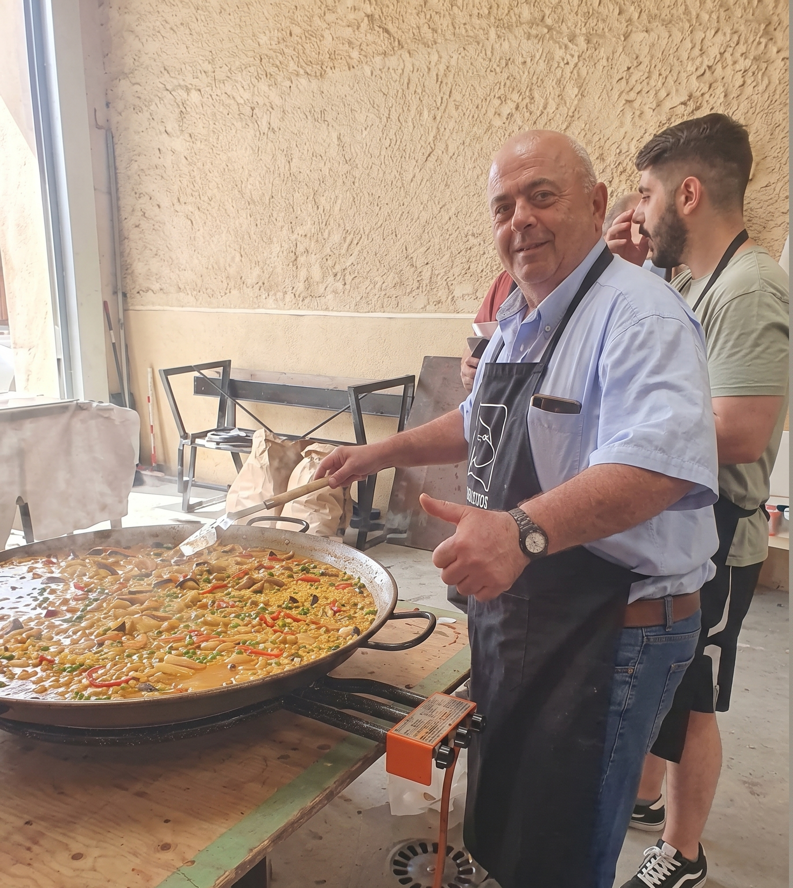
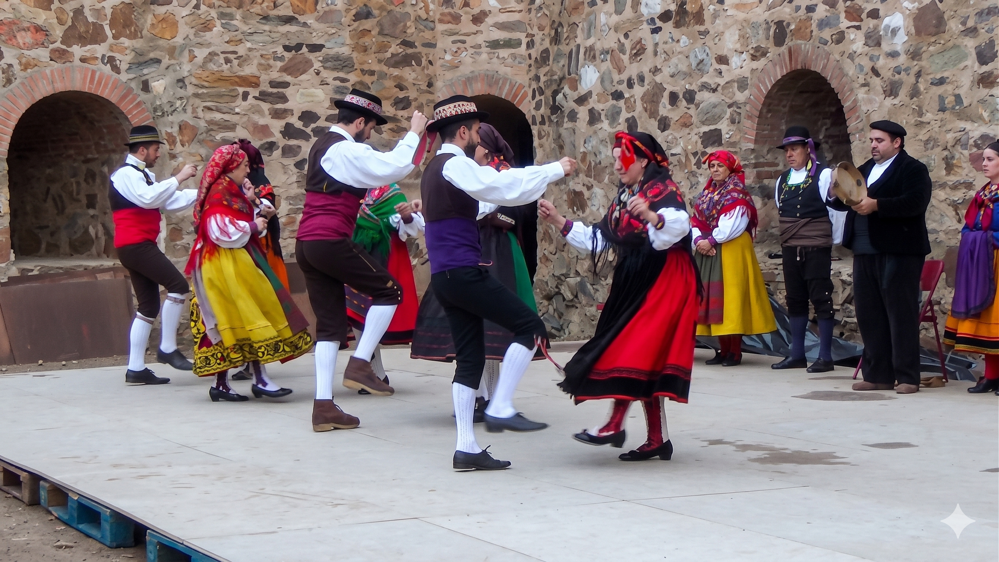

Tradiciones
¿Cómo se celebra el Magosto?
Elementos tradicionales

Vino
Se acompaña la degustación de castañas con el primer vino de la temporada.

Pimientada
Consiste en asar pimientos rojos y verdes en grandes parrillas o planchas, aliñados con aceite y sal. Es cocinada por los propios vecinos en la plaza.

Huevada
Se cocinan huevos en grandes sartenes o planchas, normalmente revueltos con chorizo, jamón o pimientos.

Música
Desde panderetas y tambores hasta sesiones modernas con DJ, atrayendo así a la gente joven.

Bailes populares
Los participantes ejecutan danzas tradicionales como el folclore.

Encuentro vecinal
Muchos vecinos que viven fuera aprovechan el Magosto para volver y reunirse con familiares y amigos. Mayores y jóvenes conviven creando un ambiente de continuidad cultural.